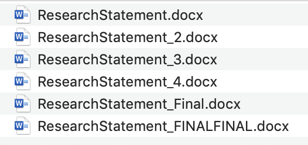
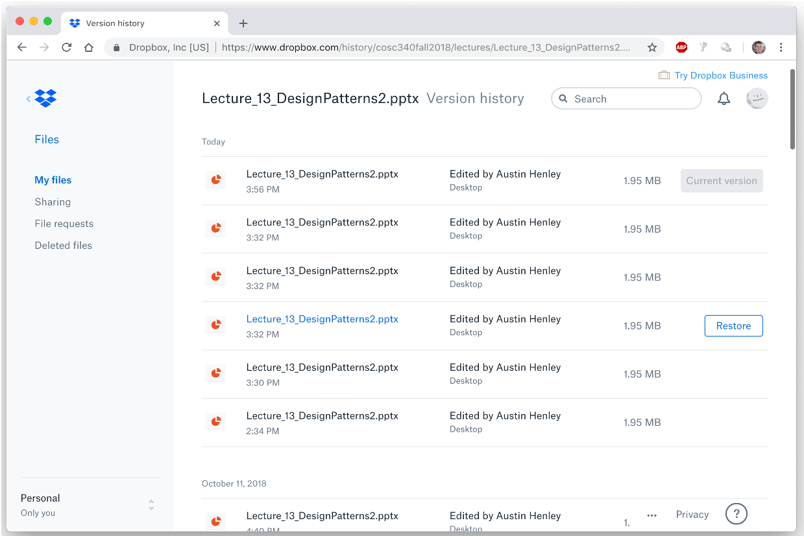
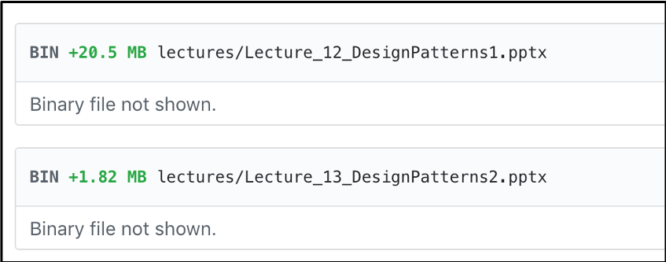
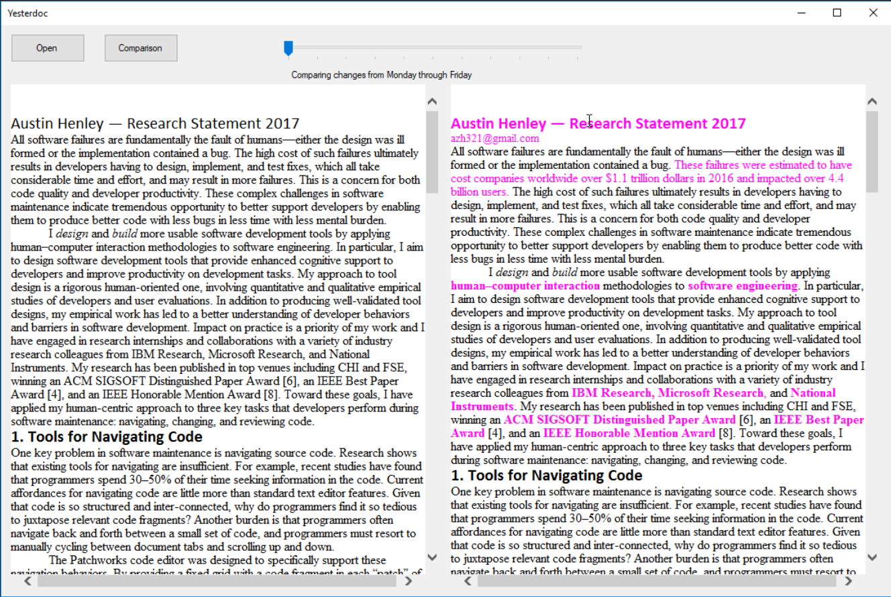

I work on software.
Update 2/4: See the discussion of this post on Hacker News.
This is how I wish I could view changes to a document over time. But let's start from the beginning.
I keep everything in Dropbox. It's great. It was actually the first software that I ever paid for (besides video games). I think these automatically syncing cloud storage tools are one of the biggest advancements in software in a long time.
But there is one major issue of file management that it doesn't effectively help me with:
Does this look familiar? I sometimes duplicate files before I make big changes so that I can quickly go back in case I mess it up. I've even observed professional software engineers doing this with code files!
You might be thinking, but Dropbox and Google Docs automatically record each version and let you view them! Here is the version history of a PowerPoint slide deck I used for a lecture:
...but this is useless. Timestamps??? Tell me what changed! Let me see the changes over time. Word has a change tracking feature, but my PhD in computer science isn't enough for me to figure it out.
But but but Austin, you should be using a proper version control system! Just use Git and GitHub!
As you can see from this GitHub diff, popular file formats, like Word and PowerPoint, are not well supported.
Not only that, but requiring me to know which versions of my document to commit violates the cognitive dimension of premature commitment. Meaning that I often don't know when a version of a file will be important until I've already changed it (which is one reason why undo/redo is so popular). Luckily the cloud storage tools are smart enough to record changes and keep track of versions for us!
But the tools don't let us compare the versions.
That is why I built this prototype several years ago that I call Yester.
It lets me scrub through the timeline, just like a YouTube video. It supports a side-by-side view of the current version with the currently selected previous version. The prototype uses the Dropbox API to get all of the versions of a file. If I ever have more time I'd love to turn it into an Electron app with support for Word, Excel, PowerPoint, and PDFs that would be free for the world to use.
So why isn't this built directly into Dropbox, Google Docs, and Microsoft Office?
If Drew Houston is reading this: I have many more ideas on how to make file management better. Reach out to me and we can discuss them :)